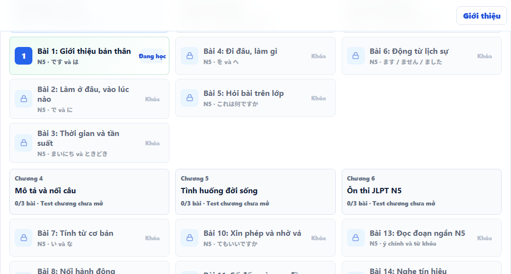
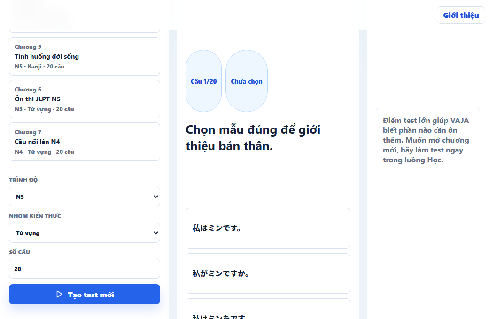

Master of Software Engineering - Thesis Defense
Design and implementation of a web-based learning assistant using role-based learning agents, Knowledge Graph, RAG, personalized pathways, flashcards, and assessment for N5/N4 learners.
Problem
For N5/N4, learners need a clear study flow, grounded answers, and review tasks based on their weak points.
Presentation Flow
The presentation follows six parts and focuses on system design, implementation, and evaluation from an MSE view.
New learners can get lost because content is separated and sources are unclear.
Agents are role-based services, not a fully autonomous multi-agent system.
React, Python FastAPI backend, PostgreSQL, Neo4j, and Qdrant.
Based on profile, pathway, quiz, flashcards, feedback, and weak skills.
RAG benchmark, pilot test, SUS/trust, pass rate, and test coverage.
Show the running app, what was achieved, and what still needs improvement.
Research Questions
The questions match the thesis evaluation plan: KG, RAG, mastery, role state, and pilot usability.
Store N5/N4 words, grammar, kanji, lessons, and study links in Neo4j.
Compare LLM only, Vector, KG, and KG + Vector using retrieval metrics.
Use quiz and flashcard signals to slow down, review, or move faster.
Tutor, Pathway, Assessment, and Review share learner state without mixing jobs.
Pilot test with Vietnamese learners: SUS, trust, scores, feedback, and comments.
Scope Clarification
Each role has a clear job, input, output, and shared learner state. This is not autonomous multi-agent AI.
Research Scope
These limits are stated clearly so the evaluation is interpreted in the right scope.
Agents mean role-based learning services with shared learner state, not fully autonomous negotiation or planning agents.
The current pathway uses heuristic rules and learning signals. Formal mastery models are future work.
The pilot checks usability and flow. It does not prove long-term improvement in Japanese ability.
RAG provides sources and grounding, but answer correctness and faithfulness still need separate human evaluation.
The pilot is small and local. It is not representative of all Vietnamese Japanese learners.
System Architecture
Thesis architecture: React frontend, Python FastAPI backend, PostgreSQL, Neo4j, and Qdrant.
One guided study surface for Vietnamese N5/N4 learners.
Controls APIs, security, assessment, and learner state.
Separate stores for learner data, KG facts, vectors, and generation.
Learner Flow
The learner follows an unlocked pathway, similar to short learning chapters.
Level, goal, daily time, and weak skills.
profile signalEach chapter has about 3 short lessons.
personalized routeKana, words, patterns, kanji, audio, and examples.
learn first5 short questions. Pass unlocks the next lesson.
85% gate20 mixed questions before the next chapter.
checkpointHard, easy, review again, or move faster.
pace signalPersonalization
The pathway changes based on real learning data, not only simple UI branching.
Level, goal, daily minutes, weak skills, quiz attempts, flashcard review, and feedback.
The learner sees a chapter pathway, locked lessons, review hints, and pace labels.
This is heuristic adaptation from learning signals, not BKT/DKT/IRT yet.

Tutor + RAG
The Tutor uses lesson context, retrieves sources before answering, and stores evidence.
Question + lesson context are sent to KG/vector retrieval before LLM generation.
The answer shows confidence and retrieved sources so the learner can see grounding.
Chat records support/exposure only. Mastery changes through quiz, assessment, or flashcards.
Assessment + Mastery
Quiz and chapter test give clearer learning signals than chat alone.

Short quiz after each lesson. 85% is required to unlock the next lesson.
20 mixed questions act as a checkpoint before opening the next chapter.
Backend grading writes CORRECT/WRONG signals; answer keys are not exposed at session start.
Software Engineering Contribution
The focus is a system with clear architecture, testability, and deployability.
RAG Benchmark
50 N5/N4 questions, 4 modes. These metrics measure retrieved sources, not final answer correctness.
Pilot User Test
Different endpoints produce different counts. They are related logs, not one combined sample size.
After Feedback
These changes came from real feedback and end-user testing.
| Feedback | App change | Purpose |
|---|---|---|
| New users did not see the big picture | Added tour guide and kana overview | Easier start from zero |
| The learning flow felt separated | Chapter pathway, 3 lessons per chapter | Clear study progress |
| Assessment had no clear role | 20-question chapter test, 85% required | Real learning checkpoint |
| Missing audio/pronunciation | Flashcard audio and pronunciation guidance | Better support for communication |
| Chatbot should not be a separate tab | Floating Tutor supports quiz context | Ask when needed, without breaking flow |
Demo Plan
The demo focuses on a zero-beginner learner.
Conclusion
VAJA reached the prototype goal and collected initial evaluation data.